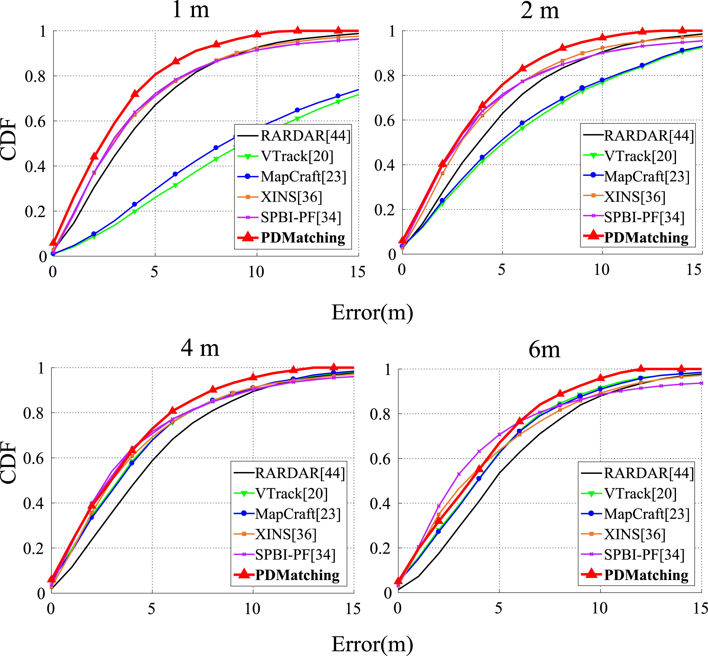
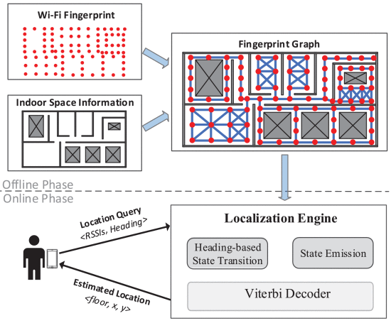

Path distance-based map matching for Wi-Fi fingerprinting positioning
P Chen, X Zheng, F Gu, J Shang · Future Generation Computer Systems, 107, 2020: 82-94co-author
Research area
Smartphone inertial sensing, Wi-Fi fingerprinting and map matching for indoor localization — the MSc and BSc work where the signal-processing toolkit was built.

